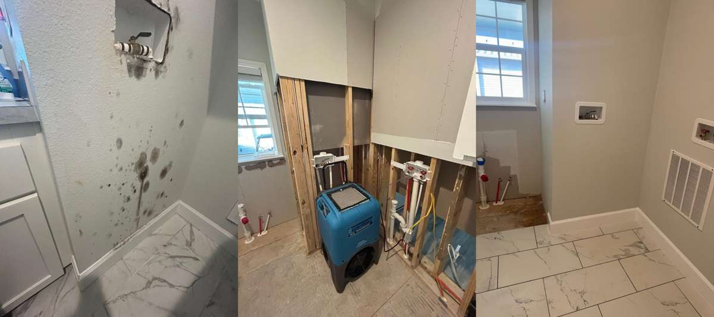

Why Clients Call
Mold Remediation made easier to scan.
- Containment and remediation support
- Moisture-source awareness and cleanup planning
- Clear next steps for repair and restoration
Mold is not only a property issue. It can also create serious concerns for health, indoor air quality, and long-term damage if it is handled improperly. Cinergy Restoration takes a thorough, containment-minded approach to mold remediation so affected areas can be addressed without unnecessarily spreading spores through the space.
Our team works to identify the problem, remove compromised materials when needed, and help guide the property back toward a cleaner and more stable condition with practical communication every step of the way.

No. Mold issues usually get harder to control when response is delayed.
Yes. The site is structured around both remediation support and recovery planning.